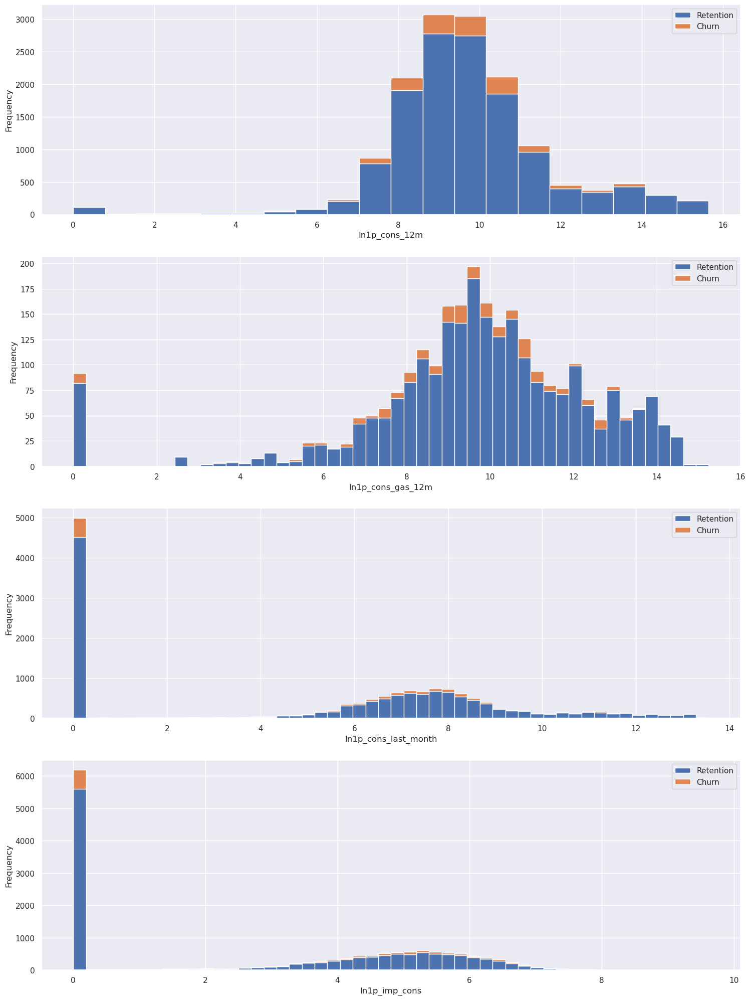
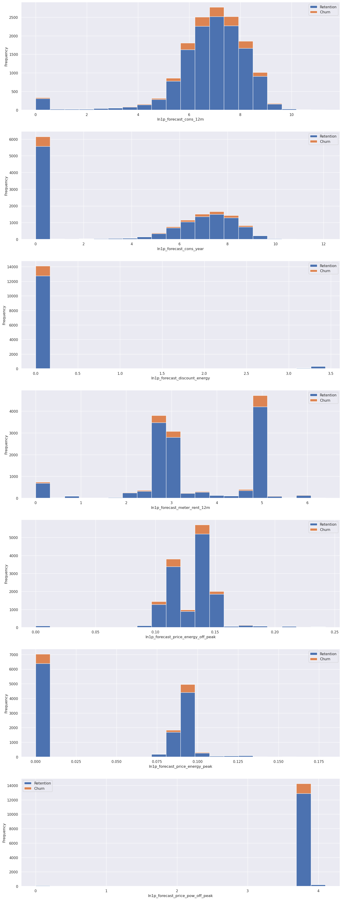
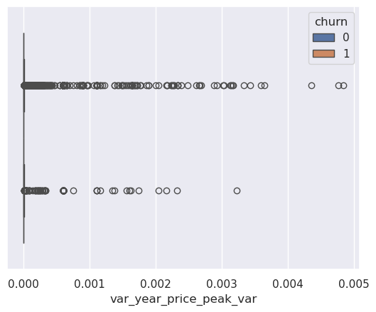

import pandas as pd
import numpy as np
import matplotlib.pyplot as plt
import seaborn as sns
sns.set(color_codes=True)Feature Engineering
2. Load data
df = pd.read_csv('../resources/clean_data_after_eda.csv')
df["date_activ"] = pd.to_datetime(df["date_activ"], format='%Y-%m-%d')
df["date_end"] = pd.to_datetime(df["date_end"], format='%Y-%m-%d')
df["date_modif_prod"] = pd.to_datetime(df["date_modif_prod"], format='%Y-%m-%d')
df["date_renewal"] = pd.to_datetime(df["date_renewal"], format='%Y-%m-%d')df.head(3)| id | channel_sales | cons_12m | cons_gas_12m | cons_last_month | date_activ | date_end | date_modif_prod | date_renewal | forecast_cons_12m | ... | var_6m_price_off_peak_var | var_6m_price_peak_var | var_6m_price_mid_peak_var | var_6m_price_off_peak_fix | var_6m_price_peak_fix | var_6m_price_mid_peak_fix | var_6m_price_off_peak | var_6m_price_peak | var_6m_price_mid_peak | churn | |
|---|---|---|---|---|---|---|---|---|---|---|---|---|---|---|---|---|---|---|---|---|---|
| 0 | 24011ae4ebbe3035111d65fa7c15bc57 | foosdfpfkusacimwkcsosbicdxkicaua | 0 | 54946 | 0 | 2013-06-15 | 2016-06-15 | 2015-11-01 | 2015-06-23 | 0.00 | ... | 0.000131 | 4.100838e-05 | 0.000908 | 2.086294 | 99.530517 | 44.235794 | 2.086425 | 9.953056e+01 | 44.236702 | 1 |
| 1 | d29c2c54acc38ff3c0614d0a653813dd | MISSING | 4660 | 0 | 0 | 2009-08-21 | 2016-08-30 | 2009-08-21 | 2015-08-31 | 189.95 | ... | 0.000003 | 1.217891e-03 | 0.000000 | 0.009482 | 0.000000 | 0.000000 | 0.009485 | 1.217891e-03 | 0.000000 | 0 |
| 2 | 764c75f661154dac3a6c254cd082ea7d | foosdfpfkusacimwkcsosbicdxkicaua | 544 | 0 | 0 | 2010-04-16 | 2016-04-16 | 2010-04-16 | 2015-04-17 | 47.96 | ... | 0.000004 | 9.450150e-08 | 0.000000 | 0.000000 | 0.000000 | 0.000000 | 0.000004 | 9.450150e-08 | 0.000000 | 0 |
3 rows × 44 columns
df.info()<class 'pandas.core.frame.DataFrame'>
RangeIndex: 14606 entries, 0 to 14605
Data columns (total 44 columns):
# Column Non-Null Count Dtype
--- ------ -------------- -----
0 id 14606 non-null object
1 channel_sales 14606 non-null object
2 cons_12m 14606 non-null int64
3 cons_gas_12m 14606 non-null int64
4 cons_last_month 14606 non-null int64
5 date_activ 14606 non-null datetime64[ns]
6 date_end 14606 non-null datetime64[ns]
7 date_modif_prod 14606 non-null datetime64[ns]
8 date_renewal 14606 non-null datetime64[ns]
9 forecast_cons_12m 14606 non-null float64
10 forecast_cons_year 14606 non-null int64
11 forecast_discount_energy 14606 non-null float64
12 forecast_meter_rent_12m 14606 non-null float64
13 forecast_price_energy_off_peak 14606 non-null float64
14 forecast_price_energy_peak 14606 non-null float64
15 forecast_price_pow_off_peak 14606 non-null float64
16 has_gas 14606 non-null object
17 imp_cons 14606 non-null float64
18 margin_gross_pow_ele 14606 non-null float64
19 margin_net_pow_ele 14606 non-null float64
20 nb_prod_act 14606 non-null int64
21 net_margin 14606 non-null float64
22 num_years_antig 14606 non-null int64
23 origin_up 14606 non-null object
24 pow_max 14606 non-null float64
25 var_year_price_off_peak_var 14606 non-null float64
26 var_year_price_peak_var 14606 non-null float64
27 var_year_price_mid_peak_var 14606 non-null float64
28 var_year_price_off_peak_fix 14606 non-null float64
29 var_year_price_peak_fix 14606 non-null float64
30 var_year_price_mid_peak_fix 14606 non-null float64
31 var_year_price_off_peak 14606 non-null float64
32 var_year_price_peak 14606 non-null float64
33 var_year_price_mid_peak 14606 non-null float64
34 var_6m_price_off_peak_var 14606 non-null float64
35 var_6m_price_peak_var 14606 non-null float64
36 var_6m_price_mid_peak_var 14606 non-null float64
37 var_6m_price_off_peak_fix 14606 non-null float64
38 var_6m_price_peak_fix 14606 non-null float64
39 var_6m_price_mid_peak_fix 14606 non-null float64
40 var_6m_price_off_peak 14606 non-null float64
41 var_6m_price_peak 14606 non-null float64
42 var_6m_price_mid_peak 14606 non-null float64
43 churn 14606 non-null int64
dtypes: datetime64[ns](4), float64(29), int64(7), object(4)
memory usage: 4.9+ MB3. Feature engineering
Difference between off-peak prices in December and preceding January
Below is the code created by your colleague to calculate the feature described above. Use this code to re-create this feature and then think about ways to build on this feature to create features with a higher predictive power.
price_df = pd.read_csv('../resources/price_data.csv')
price_df["price_date"] = pd.to_datetime(price_df["price_date"], format='%Y-%m-%d')
price_df.head()| id | price_date | price_off_peak_var | price_peak_var | price_mid_peak_var | price_off_peak_fix | price_peak_fix | price_mid_peak_fix | |
|---|---|---|---|---|---|---|---|---|
| 0 | 038af19179925da21a25619c5a24b745 | 2015-01-01 | 0.151367 | 0.0 | 0.0 | 44.266931 | 0.0 | 0.0 |
| 1 | 038af19179925da21a25619c5a24b745 | 2015-02-01 | 0.151367 | 0.0 | 0.0 | 44.266931 | 0.0 | 0.0 |
| 2 | 038af19179925da21a25619c5a24b745 | 2015-03-01 | 0.151367 | 0.0 | 0.0 | 44.266931 | 0.0 | 0.0 |
| 3 | 038af19179925da21a25619c5a24b745 | 2015-04-01 | 0.149626 | 0.0 | 0.0 | 44.266931 | 0.0 | 0.0 |
| 4 | 038af19179925da21a25619c5a24b745 | 2015-05-01 | 0.149626 | 0.0 | 0.0 | 44.266931 | 0.0 | 0.0 |
# Group off-peak prices by companies and month
monthly_price_by_id = price_df.groupby(['id', 'price_date']).agg({'price_off_peak_var': 'mean', 'price_off_peak_fix': 'mean'}).reset_index()
# Here it is not necessary to get the averages since there is only one price per date and company
monthly_price_by_id.sample(2)| id | price_date | price_off_peak_var | price_off_peak_fix | |
|---|---|---|---|---|
| 138859 | b8bd768b39a85f95b89332ea63a26b6a | 2015-10-01 | 0.146788 | 44.44471 |
| 35275 | 2d2cb8913436e61567f02f35609ffeef | 2015-12-01 | 0.147678 | 44.44471 |
# Get january and december prices
jan_prices = monthly_price_by_id.groupby('id').first().reset_index()
dec_prices = monthly_price_by_id.groupby('id').last().reset_index()
display(jan_prices.sample(2))
display(dec_prices.sample(2))| id | price_date | price_off_peak_var | price_off_peak_fix | |
|---|---|---|---|---|
| 3086 | 2fc445f99c487f06a7c936229407fa59 | 2015-01-01 | 0.19190 | 45.760931 |
| 11348 | b51fcced5ef7605a11cc736d916acc90 | 2015-01-01 | 0.15524 | 44.444710 |
| id | price_date | price_off_peak_var | price_off_peak_fix | |
|---|---|---|---|---|
| 7741 | 7b027a3b4fe4d8e09c51a6f718287582 | 2015-12-01 | 0.166056 | 44.44471 |
| 14089 | dfa0c97e0da76db2d14454bbbd42c60f | 2015-12-01 | 0.146208 | 44.44471 |
# Calculate the difference
diff = pd.merge(dec_prices.rename(columns={'price_off_peak_var': 'dec_1', 'price_off_peak_fix': 'dec_2'}), jan_prices.drop(columns='price_date'), on='id')
display(diff.head(2))| id | price_date | dec_1 | dec_2 | price_off_peak_var | price_off_peak_fix | |
|---|---|---|---|---|---|---|
| 0 | 0002203ffbb812588b632b9e628cc38d | 2015-12-01 | 0.119906 | 40.728885 | 0.126098 | 40.565969 |
| 1 | 0004351ebdd665e6ee664792efc4fd13 | 2015-12-01 | 0.143943 | 44.444710 | 0.148047 | 44.266931 |
diff['offpeak_diff_dec_january_energy'] = diff['dec_1'] - diff['price_off_peak_var']
diff['offpeak_diff_dec_january_power'] = diff['dec_2'] - diff['price_off_peak_fix']
diff = diff[['id', 'offpeak_diff_dec_january_energy','offpeak_diff_dec_january_power']]
diff.sample(2)| id | offpeak_diff_dec_january_energy | offpeak_diff_dec_january_power | |
|---|---|---|---|
| 8893 | 8da555fd7fb1ad45a5485ca1d9f1e84b | -0.006192 | 0.162916 |
| 7489 | 7723047a47d503b16382c3f33d6d3fb8 | -0.005508 | 0.177779 |
Now it is time to get creative and to conduct some of your own feature engineering! Have fun with it, explore different ideas and try to create as many as you can!
df.shape(14606, 44)Notes on the current data
A. On the clients in the clean dataset, client and price datasets
The clean database have the same number of unique clients as client_data.csv and less than the number of clients in the database price_data.csv. All the clients in df are in price_df.
display(df["id"].unique().shape)
display(price_df["id"].unique().shape)
display(len(
np.intersect1d(
df["id"].unique(), price_df["id"].unique()
)))(14606,)(16096,)14606B. Channel sales
The channels_sales showed that some channels did not have churning clients. It could be due to a low number of samples for those channels.
df.groupby(["channel_sales", "churn"])['id'].count()channel_sales churn
MISSING 0 3442
1 283
epumfxlbckeskwekxbiuasklxalciiuu 0 3
ewpakwlliwisiwduibdlfmalxowmwpci 0 818
1 75
fixdbufsefwooaasfcxdxadsiekoceaa 0 2
foosdfpfkusacimwkcsosbicdxkicaua 0 5934
1 820
lmkebamcaaclubfxadlmueccxoimlema 0 1740
1 103
sddiedcslfslkckwlfkdpoeeailfpeds 0 11
usilxuppasemubllopkaafesmlibmsdf 0 1237
1 138
Name: id, dtype: int64C. Fields of interest from Task 2
- There are 5 sales channels “channel_sales” with churn and 3 without any churning clients.
- Consumption fields show a highly skewed data.
- Forecast shows highly positively skewed data.
- Has gas or not shows a very similar percentage of churning (maybe not an interesting column)
- Margins show highly positively skewed data.
- Subscribed power shows also long right tails of skewed data.
- Number of products “nb_prod_act” (Similar churning perc for 1 to 5 products, 6 to 32 products shows no churning)
- Number of years of antiquity. If it is 1 year, no churning.
- There are some campains “origin_up” that has no churning.
- The variable prices peak and mid-peak are higher for those clients that churned than for those that didn’t.
Tasks for Feature Engineering:
- Remove “non-relevant” columns from datasets.
- Expand datasets with new columns or create new features (dates->year, month, day) (one-hot encoding…)
- Combine columns to get a field that can achieve better predictions in a model
- Merge datasets that expands the information. Both dataframes should share a common column.
Simplify data
After the Exploratory Data Analysis (Task 2), I will try to keep the analysis simple with a low number of parameters that seem to give a clear distinction of clients that churned and those that did not.
# Save the id and unique sales channel identifier in the output dataframe
df_out = pd.DataFrame()
df_out["id"] = df["id"]
df_out["churn"] = df["churn"]Channel sales
# Unique values of the channel sales
ch_ids = df["channel_sales"].unique()
# Make a dict assigning a unique integer identifier to each channel_sales
channels_map = {k:v for (k, v) in zip(ch_ids, range(len(ch_ids))) }
channels_map{'foosdfpfkusacimwkcsosbicdxkicaua': 0,
'MISSING': 1,
'lmkebamcaaclubfxadlmueccxoimlema': 2,
'usilxuppasemubllopkaafesmlibmsdf': 3,
'ewpakwlliwisiwduibdlfmalxowmwpci': 4,
'epumfxlbckeskwekxbiuasklxalciiuu': 5,
'sddiedcslfslkckwlfkdpoeeailfpeds': 6,
'fixdbufsefwooaasfcxdxadsiekoceaa': 7}Add the channel sales unique integer identifier to the output df
df_out["ch_sales_id"] = df["channel_sales"].map(channels_map)y1 = df_out.groupby("ch_sales_id").agg({'id':'count', 'churn':'sum'})
y1["churn_perc"] = (y1["churn"]/y1["id"]*100).round(decimals=1)
display(y1)| id | churn | churn_perc | |
|---|---|---|---|
| ch_sales_id | |||
| 0 | 6754 | 820 | 12.1 |
| 1 | 3725 | 283 | 7.6 |
| 2 | 1843 | 103 | 5.6 |
| 3 | 1375 | 138 | 10.0 |
| 4 | 893 | 75 | 8.4 |
| 5 | 3 | 0 | 0.0 |
| 6 | 11 | 0 | 0.0 |
| 7 | 2 | 0 | 0.0 |
Consumption
The consumption data shows a large number of clients that consumed 0:
# Consumption 0 for all clients
cons12m_0 = (df["cons_12m"] == 0.0).sum()
# Consumption 0 for those that has gas
cond_cons_gas = (df["has_gas"]=='t') & (df["cons_gas_12m"]==0.0)
cons_gas_0 = cond_cons_gas.sum()
# Consumption of last month = 0
cons_lastm_0 = (df["cons_last_month"] == 0.0).sum()
# Current paid consumption
imp_cons_0 = (df["imp_cons"] == 0.0).sum()
results = {
"Consumption 0 for all clients": cons12m_0,
"Consumption 0 for clients with gas": cons_gas_0,
"Consumption last month = 0": cons_lastm_0,
"Current paid consumption = 0": imp_cons_0
}
display(
pd.DataFrame.from_dict(results, orient="index", columns=["Count"])
)| Count | |
|---|---|
| Consumption 0 for all clients | 117 |
| Consumption 0 for clients with gas | 92 |
| Consumption last month = 0 | 4983 |
| Current paid consumption = 0 | 6169 |
It may be interesting to add a column to filter if the consumption values are 0 so it can be used in a decision tree
df_out["cons12m_is_zero"] = (df["cons_12m"] == 0.0).astype(int)
df_out["cons_gas_12m_is_zero"] = (df["cons_gas_12m"] == 0.0).astype(int)
df_out["cons_last_month_is_zero"] = (df["cons_last_month"] == 0.0).astype(int)
df_out["imp_cons_is_zero"] = (df["imp_cons"] == 0.0).astype(int)
df_out.sample(3)| id | churn | ch_sales_id | cons12m_is_zero | cons_gas_12m_is_zero | cons_last_month_is_zero | imp_cons_is_zero | |
|---|---|---|---|---|---|---|---|
| 12695 | 38849c0404d66292fe177c09b179a225 | 0 | 4 | 0 | 0 | 0 | 0 |
| 11740 | 74ee25a056aa668b3e8eee92673c7ba8 | 0 | 0 | 0 | 1 | 0 | 0 |
| 9153 | 24c8cbb6aa7eac94400b3917e765c2b6 | 0 | 3 | 0 | 1 | 0 | 0 |
And to deal with 0 values and long tail distributions we can apply techniques to reduce the high skewness of the data, such as applying sqrt, logarithms…
def ln_xplus1(df, cols, inplace=True, suffix="ln1p"):
"""
Apply log1p transformation (ln(1+x)) to one or more DataFrame columns.
Parameters
----------
df : pd.DataFrame
Input DataFrame.
cols : str or list of str
Column name(s) to transform.
- If str → single column
- If list of str → multiple columns
inplace : bool, default=True
If True, modify DataFrame in place.
If False, return a new DataFrame.
suffix : str, default="ln1p"
Prefix for new column names.
Returns
-------
pd.DataFrame
DataFrame with new transformed columns.
"""
if isinstance(cols, str):
cols = [cols]
elif not isinstance(cols, (list, tuple)):
raise TypeError("`cols` must be a string or list/tuple of strings.")
missing = set(cols) - set(df.columns)
if missing:
raise ValueError(f"Columns not found in DataFrame: {missing}")
target = df if inplace else df.copy()
for col in cols:
target[f"{suffix}_{col}"] = np.log1p(target[col])
return target
# a = ln_xplus1(df, cols="cons_12m", inplace=False)
# a.head(2)cons_list = ['cons_12m', 'cons_gas_12m', 'cons_last_month', 'imp_cons']
consumption = ln_xplus1(df[cons_list], cols=cons_list, inplace=False)
consumption[['id', 'has_gas', 'churn']] = df[['id', 'has_gas', 'churn']]consumption.columnsIndex(['cons_12m', 'cons_gas_12m', 'cons_last_month', 'imp_cons',
'ln1p_cons_12m', 'ln1p_cons_gas_12m', 'ln1p_cons_last_month',
'ln1p_imp_cons', 'id', 'has_gas', 'churn'],
dtype='object')def plot_distribution(dataframe, column, ax, bins_=50):
"""
Plot variable distribution in a stacked histogram of churned or retained company
"""
# Create a temporal dataframe with the data to be plot
temp = pd.DataFrame({"Retention": dataframe[dataframe["churn"]==0][column],
"Churn":dataframe[dataframe["churn"]==1][column]})
# Plot the histogram
temp[["Retention","Churn"]].plot(kind='hist', bins=bins_, ax=ax, stacked=True)
# X-axis label
ax.set_xlabel(column)
# Change the x-axis to plain style
ax.ticklabel_format(style='plain', axis='x')fig, axs = plt.subplots(nrows=4, figsize=(18, 25))
# plot_distribution(consumption, 'cons_12m', axs[0], bins_=50)
plot_distribution(consumption, 'ln1p_cons_12m', axs[0], bins_=20)
plot_distribution(consumption[consumption['has_gas'] == 't'], 'ln1p_cons_gas_12m', axs[1])
plot_distribution(consumption, 'ln1p_cons_last_month', axs[2])
plot_distribution(consumption, 'ln1p_imp_cons', axs[3])
Add this data to df_out
# New fields
transformed_consumption = list(map(lambda x: f"ln1p_{x}", cons_list))
print(transformed_consumption)['ln1p_cons_12m', 'ln1p_cons_gas_12m', 'ln1p_cons_last_month', 'ln1p_imp_cons']# New transformed columns and has_gas column if they are not in df_out
missing_cols = (set(transformed_consumption) | {"has_gas"}) - set(df_out.columns)
# Convert to list so I can use it in the dataframe
missing_cols = list(missing_cols)
# Add the missing columns to the output dataframe
df_out[missing_cols] = consumption[missing_cols]
print(df_out.columns)Index(['id', 'churn', 'ch_sales_id', 'cons12m_is_zero', 'cons_gas_12m_is_zero',
'cons_last_month_is_zero', 'imp_cons_is_zero', 'ln1p_cons_last_month',
'ln1p_cons_12m', 'ln1p_imp_cons', 'has_gas', 'ln1p_cons_gas_12m'],
dtype='object')Forecast
The forecast fields also shows positive long tail distributions and outliers. We can apply the logaritmic transformations:
forecast_list = ["forecast_cons_12m",
"forecast_cons_year","forecast_discount_energy","forecast_meter_rent_12m",
"forecast_price_energy_off_peak","forecast_price_energy_peak",
"forecast_price_pow_off_peak"
]
# Transform the forecast fields
transf_forecast = ln_xplus1(df[forecast_list], cols=forecast_list, inplace=False)
list_transf_forecast = list(map(lambda x: f"ln1p_{x}", forecast_list))
transf_forecast["churn"] = df["churn"]fig, axs = plt.subplots(nrows=len(list_transf_forecast), figsize=(18,50))
for i, dfcol in enumerate(list_transf_forecast):
plot_distribution(transf_forecast, dfcol, axs[i], bins_=20)
We can keep the forecasts for the consumption in the next 12 months and calendar year
# New transformed columns and has_gas column if they are not in df_out
missing_cols = set(list_transf_forecast[:2]) - set(df_out.columns)
# Convert to list so I can use it in the dataframe
missing_cols = list(missing_cols)
# Add the missing columns to the output dataframe
df_out[missing_cols] = transf_forecast[missing_cols]
print(df_out.columns)Index(['id', 'churn', 'ch_sales_id', 'cons12m_is_zero', 'cons_gas_12m_is_zero',
'cons_last_month_is_zero', 'imp_cons_is_zero', 'ln1p_cons_last_month',
'ln1p_cons_12m', 'ln1p_imp_cons', 'has_gas', 'ln1p_cons_gas_12m',
'ln1p_forecast_cons_year', 'ln1p_forecast_cons_12m'],
dtype='object')And columns indicating where the forecast for consumption are 0
df_out["forecast_cons_12m_is_zero"] = (df["forecast_cons_12m"] == 0.0).astype(int)
df_out["forecast_cons_year_is_zero"] = (df["forecast_cons_year"] == 0.0).astype(int)Number of products
df_out["nb_prod_act"] = df["nb_prod_act"]Number of antiquity years as a client
df_out["num_years_antig"] = df["num_years_antig"]Extra features from the prices datasets
Original price variation in a year and 6 months
cols_var_year = df.filter(like="var_year").columns
df_out[cols_var_year] = df[cols_var_year]
cols_var_6m = df.filter(like="var_6m").columns
df_out[cols_var_6m] = df[cols_var_6m]The prices along the year for companies that has churn is larger than for those that did not churned.
Some of the variable and fixed prices shows a more contant price along the year and a clearer separation of the prices for churn and retained companies. We can obtain the average price along the year for: {“price_mid_peak_var”, “price_mid_peak_fix”, “price_peak_fix”}.
# Filter prices by the clients that are in the clean df
# And calculate averages per id and month
monthly_price_by_id = price_df[
price_df["id"].isin(df["id"])
].groupby(
['id', 'price_date']
).agg(
{'price_mid_peak_var': 'mean',
'price_mid_peak_fix': 'mean',
'price_peak_fix': 'mean'}
).reset_index()
# Average price per year
# Group by id
# Calculate mean in the selected price fields
# And rename the columns as avg_***
# Finally, get back "id" as a column, because it was by default, set as the index of the dataframe.
avg_year_price_by_id = (
monthly_price_by_id.groupby("id")[["price_mid_peak_var", "price_mid_peak_fix", "price_peak_fix"]]
.mean()
.add_prefix("avg_")
).reset_index()
display(avg_year_price_by_id)| id | avg_price_mid_peak_var | avg_price_mid_peak_fix | avg_price_peak_fix | |
|---|---|---|---|---|
| 0 | 0002203ffbb812588b632b9e628cc38d | 0.073160 | 16.280694 | 24.421038 |
| 1 | 0004351ebdd665e6ee664792efc4fd13 | 0.000000 | 0.000000 | 0.000000 |
| 2 | 0010bcc39e42b3c2131ed2ce55246e3c | 0.000000 | 0.000000 | 0.000000 |
| 3 | 00114d74e963e47177db89bc70108537 | 0.000000 | 0.000000 | 0.000000 |
| 4 | 0013f326a839a2f6ad87a1859952d227 | 0.074921 | 16.291555 | 24.437330 |
| ... | ... | ... | ... | ... |
| 14601 | ffebf6a979dd0b17a41076df1057e733 | 0.072210 | 16.242678 | 24.364017 |
| 14602 | fffac626da707b1b5ab11e8431a4d0a2 | 0.000000 | 0.000000 | 0.000000 |
| 14603 | fffc0cacd305dd51f316424bbb08d1bd | 0.094842 | 16.763569 | 24.895768 |
| 14604 | fffe4f5646aa39c7f97f95ae2679ce64 | 0.073735 | 16.242678 | 24.364017 |
| 14605 | ffff7fa066f1fb305ae285bb03bf325a | 0.075635 | 16.258971 | 24.388455 |
14606 rows × 4 columns
Add the yearly avg prices to the df
df_out = pd.merge(left=df_out, right=avg_year_price_by_id, on="id")
df_out.columnsIndex(['id', 'churn', 'ch_sales_id', 'cons12m_is_zero', 'cons_gas_12m_is_zero',
'cons_last_month_is_zero', 'imp_cons_is_zero', 'ln1p_cons_last_month',
'ln1p_cons_12m', 'ln1p_imp_cons', 'has_gas', 'ln1p_cons_gas_12m',
'ln1p_forecast_cons_year', 'ln1p_forecast_cons_12m',
'forecast_cons_12m_is_zero', 'forecast_cons_year_is_zero',
'nb_prod_act', 'num_years_antig', 'var_year_price_off_peak_var',
'var_year_price_peak_var', 'var_year_price_mid_peak_var',
'var_year_price_off_peak_fix', 'var_year_price_peak_fix',
'var_year_price_mid_peak_fix', 'var_year_price_off_peak',
'var_year_price_peak', 'var_year_price_mid_peak',
'var_6m_price_off_peak_var', 'var_6m_price_peak_var',
'var_6m_price_mid_peak_var', 'var_6m_price_off_peak_fix',
'var_6m_price_peak_fix', 'var_6m_price_mid_peak_fix',
'var_6m_price_off_peak', 'var_6m_price_peak', 'var_6m_price_mid_peak',
'avg_price_mid_peak_var', 'avg_price_mid_peak_fix',
'avg_price_peak_fix'],
dtype='object')df_out[["var_6m_price_mid_peak", "churn"]]| var_6m_price_mid_peak | churn | |
|---|---|---|
| 0 | 4.423670e+01 | 1 |
| 1 | 0.000000e+00 | 0 |
| 2 | 0.000000e+00 | 0 |
| 3 | 0.000000e+00 | 0 |
| 4 | 4.860000e-10 | 0 |
| ... | ... | ... |
| 14601 | 0.000000e+00 | 0 |
| 14602 | 2.987132e-04 | 1 |
| 14603 | 4.860000e-10 | 1 |
| 14604 | 0.000000e+00 | 0 |
| 14605 | 0.000000e+00 | 0 |
14606 rows × 2 columns
Plot
# avg prices from churning companies vs Retained companies
# col_= "avg_price_mid_peak_fix"
# col_= "var_year_price_peak"
col_= "var_year_price_peak_var"
condition_ = (df_out[col_]>0.0)
sns.boxplot(df_out[condition_], x=col_, hue="churn")
ax = plt.gca()
# ax.set_xlim(0. , 1e-1)
plt.show()